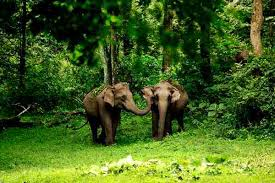
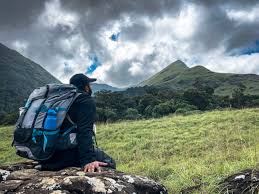

Tourist Places Near Aham Homestay in Wayanad
Discover waterfalls, wildlife sanctuaries, trekking spots, temples and scenic attractions located close to Aham Homestay for a memorable Wayanad travel experience.
Best Nearby Attractions to Visit During Your Stay in Wayanad
Aham Homestay is strategically located near some of the most popular tourist places in Wayanad. Guests staying at our homestay can easily explore waterfalls, wildlife sanctuaries, trekking destinations, temples and scenic viewpoints without long travel.

Tholpetti Wildlife Sanctuary

Nagarhole National Park

Banasura Sagar Dam

Banasura Hill Trekking

Iruppu Waterfalls

Pakshi Pathalam Trek

Kuruva Island
Staying at Aham Homestay allows you to explore the best tourist attractions in Wayanad with ease. Our location makes sightseeing convenient while ensuring a peaceful retreat surrounded by nature after a day of travel.